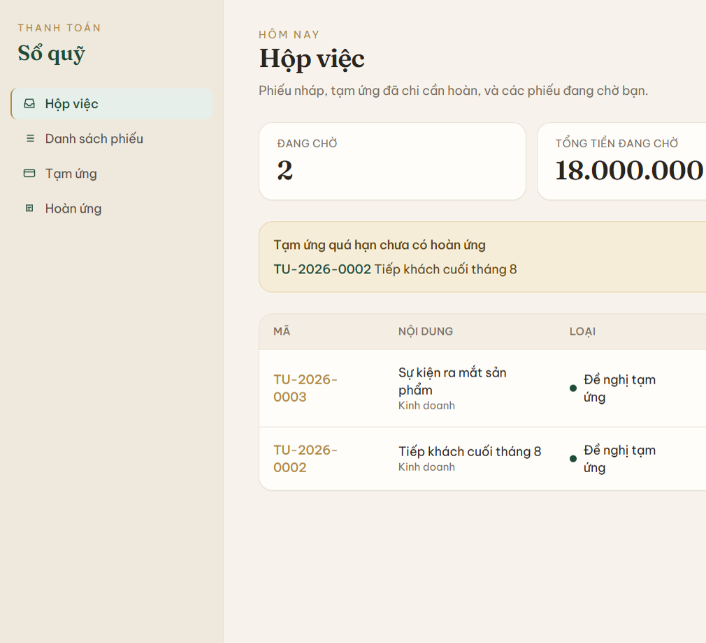
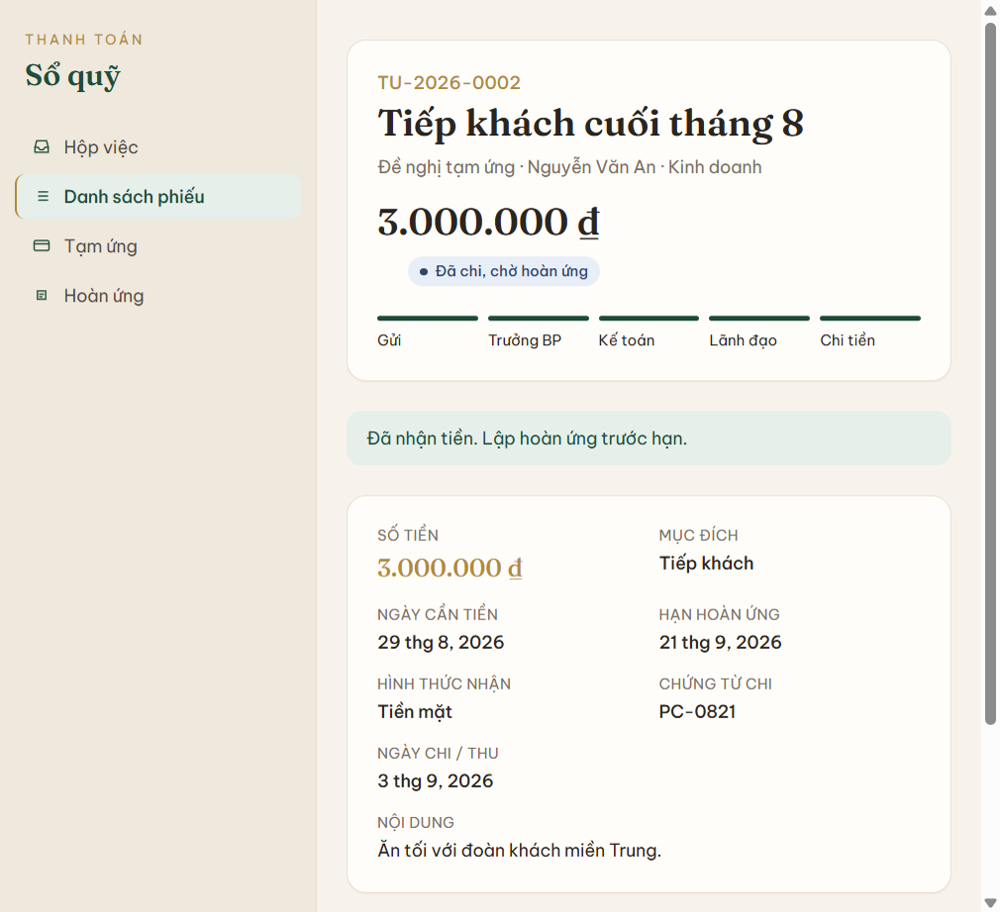
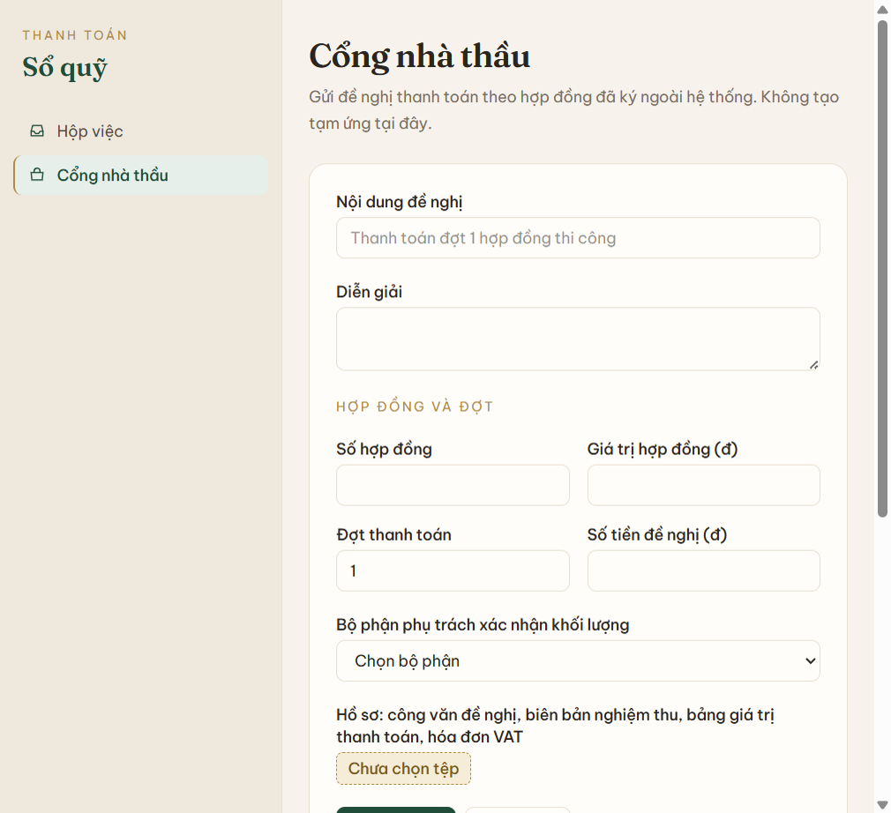

1. Giới thiệu và mục đích
ICMS là chỗ xin — duyệt — chi — hoàn ứng cho tiền nội bộ và đề nghị thanh toán nhà thầu theo số tiền. Nhân viên, trưởng bộ phận, kế toán, lãnh đạo và nhà thầu làm việc trên cùng một sổ phiếu. Phần mềm kế toán (MISA, Fast, hoặc phần mềm đang dùng) vẫn là nơi hạch toán, thuế và sổ cái.
Vấn đề đang giải: phiếu giấy và Excel không cho biết phiếu đang chờ ai, tạm ứng nào quá hạn, và lũy kế nhà thầu đã vượt hợp đồng hay chưa.
Mục tiêu sản phẩm
- Một phiếu điện tử cho mỗi lần xin tiền, có mã, trạng thái và nhật ký duyệt.
- Mỗi vai trò chỉ thấy và chỉ bấm được bước của mình.
- Kế toán ghi được ngày chi và số chứng từ / ủy nhiệm chi trên phiếu.
- Nhà thầu không gửi được đợt làm lũy kế vượt giá trị hợp đồng đã gõ trên phiếu.
2. Người dùng
Sáu vai trò trên hệ thống. Một tài khoản một vai trò. Nhu cầu lấy từ luồng đang chạy, không thêm persona ngoài các vai này.
| Vai trò | Tài khoản demo | Cần làm được | Đau điểm nếu thiếu hệ thống |
|---|---|---|---|
| Nhân viên | user |
Xin tạm ứng, lập hoàn ứng cho phiếu đã chi của mình, xem phiếu của mình. | Không nhớ hạn hoàn, không biết phiếu đang kẹt bước nào. |
| Trưởng bộ phận | truong_kd, truong_kt |
Duyệt tạm ứng / hoàn ứng của bộ phận; xác nhận khối lượng đề nghị thanh toán được giao cho bộ phận mình. | Duyệt trên giấy, không thấy hết phiếu bộ phận. |
| Kế toán | ke_toan |
Kiểm chứng từ, thấy tạm ứng quá hạn, ghi chi / thu chênh, quyết toán hoàn ứng đủ tiền. | Đối chiếu tay với Excel; thiếu số ủy nhiệm chi trên phiếu. |
| Ban lãnh đạo | lanh_dao |
Duyệt hoặc từ chối phiếu đã qua kế toán. Hoàn ứng chỉ tới đây khi chi vượt. | Ký hàng loạt mà không thấy ngữ cảnh phiếu. |
| Nhà thầu | nha_thau |
Gửi đề nghị thanh toán theo số hợp đồng, đợt, số tiền; bổ sung hồ sơ khi bị trả lại. | Gửi file rời, không biết đợt trước đã tính vào lũy kế chưa. |
| Quản trị | admin |
Xem mọi phiếu; trên bản demo bấm được nút của vai trò đang chờ. Bản dùng thật cần thêm / khóa người, bộ phận, nhà thầu. | Phải nhờ kỹ thuật sửa tài khoản. |
Mật khẩu demo: demo123. Bản dùng thật phải gỡ tài khoản mẫu — xem mục 8.
3. Tính năng (MoSCoW)
Mỗi yêu cầu có mã ICMS-Rxx để dev và QA truy vết. Phần Đã có mô tả sản phẩm đang chạy. Tick phần Chưa có khi nghiệm thu xong.
Đã có Must — đang vận hành
| Mã | Yêu cầu | Điều kiện chấp nhận |
|---|---|---|
| ICMS-R01 | Đề nghị tạm ứng nội bộ | Nhân viên nhập mục đích, nội dung, số tiền, ngày cần tiền, hạn hoàn ứng, tiền mặt hoặc chuyển khoản (có số TK). Lưu nháp hoặc gửi trưởng bộ phận. |
| ICMS-R02 | Đề nghị hoàn ứng | Chọn đúng một phiếu tạm ứng đã chi của mình; kê từng dòng chi. Chi ít hơn → thu thừa. Chi bằng → quyết toán. Chi vượt → lãnh đạo rồi chi thêm. Một tạm ứng không có hai hoàn ứng đang xử lý. |
| ICMS-R03 | Đề nghị thanh toán nhà thầu | Nhà thầu nhập số HĐ, giá trị, đợt, số tiền, bộ phận phụ trách, file hồ sơ. Hợp đồng ký ngoài hệ thống. |
| ICMS-R04 | Luồng duyệt cố định | Nháp → trưởng bộ phận → kế toán → lãnh đạo → chi. Hoàn ứng không vượt thì bỏ qua lãnh đạo. Từ chối kèm lý do. Trả lại: phiếu nội bộ về Nháp; phiếu nhà thầu về trạng thái trả lại. |
| ICMS-R05 | Hộp việc | Mỗi vai trò thấy phiếu đang chờ mình. Có số đang chờ, tổng tiền đang chờ, số quá hạn (với nhân viên và kế toán). |
| ICMS-R06 | Phân quyền xem | Nhân viên: phiếu của mình. Trưởng bộ phận: phiếu bộ phận. Nhà thầu: đề nghị thanh toán của mình. Kế toán, lãnh đạo, quản trị: mọi phiếu. |
| ICMS-R07 | Đính kèm và nhật ký | Đính được file trên phiếu. Mọi gửi / duyệt / chi ghi dòng thời gian. |
| ICMS-R08 | Chặn lũy kế hợp đồng lúc gửi | Tổng các đợt đang xử lý hoặc đã trả của cùng nhà thầu + cùng số HĐ không vượt giá trị gõ trên phiếu. |
| ICMS-R09 | Cảnh báo tạm ứng quá hạn | Phiếu đã chi quá hạn hoàn, chưa có hoàn ứng hợp lệ, hiện trên hộp việc. Nhân viên vẫn xin được tạm ứng mới. |
Chưa có Must Trước khi chi tiền thật
Should Sau khi bộ phận đầu chạy ổn
4. Luồng và giao diện
Chi tiết bấm nút nằm ở hướng dẫn sử dụng. Dưới đây là luồng sản phẩm để dev và QA viết test.
Tạm ứng nội bộ
Nhân viên gửi → trưởng bộ phận → kế toán → lãnh đạo → kế toán chi (ngày + số chứng từ) → trạng thái Đã chi, chờ hoàn ứng. Từ chối dừng phiếu. Trả lại đưa về Nháp.
sequenceDiagram
participant NV as Nhân viên
participant HT as Hệ thống
participant TBP as Trưởng bộ phận
participant KT as Kế toán
participant LD as Ban lãnh đạo
NV->>HT: Tạo đề nghị tạm ứng
HT->>TBP: Chờ trưởng bộ phận duyệt
TBP->>HT: Duyệt
HT->>KT: Chờ kế toán kiểm tra
KT->>HT: Đồng ý
HT->>LD: Chờ lãnh đạo duyệt
LD->>HT: Duyệt
HT->>KT: Chờ chi tiền
KT->>HT: Đã chi, ghi chứng từ
HT-->>NV: Đã nhận tiền, chờ hoàn ứng trước hạn
Hoàn ứng nội bộ
Nhân viên gửi → trưởng bộ phận → kế toán. Chi vượt mới sang lãnh đạo rồi chi thêm. Chi ít hơn: kế toán xác nhận đã thu. Chi bằng: kế toán quyết toán. Phiếu hoàn ứng thành Đã quyết toán; phiếu tạm ứng gốc thành Đã hoàn ứng.
sequenceDiagram
participant NV as Nhân viên
participant HT as Hệ thống
participant TBP as Trưởng bộ phận
participant KT as Kế toán
participant LD as Ban lãnh đạo
NV->>HT: Chọn phiếu tạm ứng, kê chi phí thực tế
HT->>TBP: Chờ trưởng bộ phận duyệt
TBP->>HT: Duyệt
HT->>KT: Chờ kiểm tra chứng từ
KT->>HT: Chứng từ hợp lệ
HT->>LD: Chờ duyệt nếu chi vượt
LD->>HT: Duyệt phần vượt
KT->>HT: Chi thêm hoặc thu thừa
HT-->>NV: Đã quyết toán, tạm ứng gốc đã hoàn
Thanh toán nhà thầu
Nhà thầu gửi → trưởng bộ phận phụ trách xác nhận khối lượng → kế toán (kiểm hóa đơn và lũy kế) → lãnh đạo → kế toán chi, ghi số ủy nhiệm chi → Đã thanh toán. Hồ sơ sai: trả lại nhà thầu.
sequenceDiagram
participant NT as Nhà thầu
participant HT as Hệ thống
participant TBP as Bộ phận phụ trách
participant KT as Kế toán
participant LD as Ban lãnh đạo
NT->>HT: Gửi đề nghị thanh toán kèm hồ sơ
HT->>TBP: Chờ xác nhận khối lượng
TBP->>HT: Xác nhận khối lượng
HT->>KT: Chờ kiểm tra hóa đơn và lũy kế
KT->>HT: Đồng ý
HT->>LD: Chờ lãnh đạo duyệt
LD->>HT: Duyệt
KT->>HT: Chi tiền, ghi số ủy nhiệm chi
HT-->>NT: Đã thanh toán
Màn hình chính
- Hộp việc
/dashboard - Danh sách phiếu
/requests - Form tạm ứng / hoàn ứng
/requests/new - Cổng nhà thầu
/ncc - Quản trị người dùng
/admin(bản hiện tại chỉ xem danh sách)



5. Yêu cầu kỹ thuật
| Nhóm | Yêu cầu |
|---|---|
| Giao diện | Web tiếng Việt. Số tiền kiểu Việt Nam (1.234.567). Đủ dùng trên máy tính; không bắt buộc app mobile riêng. |
| Phân quyền | Kiểm tra vai trò ở server action, không chỉ ẩn nút. Nhân viên không sửa phiếu người khác. Nhà thầu không thấy phiếu nội bộ. |
| File | Lưu trên object storage (Vercel Blob). Mở lại được sau khi triển khai lại. |
| Tiền | Bản hiện tại lưu Float. Việc mới chạm số tiền phải dùng số nguyên VND hoặc decimal, không thêm float. |
| Hiệu năng | Đủ cho quy mô một công ty vừa: danh sách phiếu của bộ phận mở trong vài giây. Không lấy chuẩn 100.000 chứng từ của tài liệu thầu phụ. |
| Bảo mật | HTTPS trên bản dùng thật. Mật khẩu băm. Không để mật khẩu mẫu trên production. |
6. Giả định và ràng buộc
- Hợp đồng nhà thầu đã ký ngoài hệ thống. ICMS chỉ nhận số HĐ, giá trị và đợt do người dùng gõ.
- Một người một vai trò. Quản trị trên bản demo được bấm bước đang chờ.
- Hạch toán, VAT, UNC ngân hàng làm ngoài ICMS. Kế toán chỉ ghi số chứng từ lên phiếu.
- Được tạo tạm ứng mới khi còn khoản chưa hoàn, trừ khi mục 9 chốt “Cấm xin tiếp”.
- Mọi tạm ứng đều qua lãnh đạo, trừ khi mục 9 chốt ngưỡng và ICMS-R16 đã làm.
- Quy chế giấy do lãnh đạo và kế toán ký là nguồn quy định hạn hoàn và loại chứng từ — phần mềm không chứa hết quy chế.
7. Rủi ro và phụ thuộc
| Rủi ro | Hệ quả | Hướng xử lý |
|---|---|---|
| Số HĐ và giá trị gõ tay, không khóa với phụ lục | Hai phiếu cùng HĐ có thể ghi hai giá trị khác nhau; lũy kế lệch. | Kế toán kiểm lại lúc duyệt. Không mở BOQ trong PRD này. |
| Tiền kiểu float | Làm tròn sai khi cộng nhiều dòng. | Việc mới dùng số nguyên / decimal. Xuất Excel để đối chiếu. |
| Chưa chặn người lập tự duyệt | Quản trị (và tài khoản kiêm nhiệm) có thể duyệt phiếu mình lập. | Quy chế vận hành: không dùng một người cho hai bước. Cải tiến SoD ghi nhận, không chặn mở bộ phận đầu nếu đã tập huấn. |
| Phụ thuộc Vercel, Supabase, Blob | Mất file hoặc mất site nếu cấu hình sai. | ICMS-R14, ICMS-R15 phải xong trước khi chi tiền thật. |
| Quy chế chưa ký mà đã mở | Tranh cãi hạn hoàn và có được xin tiếp khi quá hạn. | Điều kiện phát hành mục 8 bắt buộc quy chế đã ký. |
8. KPI và điều kiện phát hành
Thành công lần mở đầu: một bộ phận xin và hoàn ứng được trên bản dùng thật trong một tuần, kế toán đối chiếu được danh sách phiếu với sổ của mình.
Được mở cho bộ phận đầu khi mọi dòng dưới đây đã tick
9. Câu hỏi nghiệp vụ cần chốt
Nghiệp vụ điền quyết định. Mỗi câu ghi hành vi đang chạy để biết cái nào đang cố định. Ô lưu trên trình duyệt này. Không tự thành Must ở mục 3 — IT làm sau khi đã trả lời.